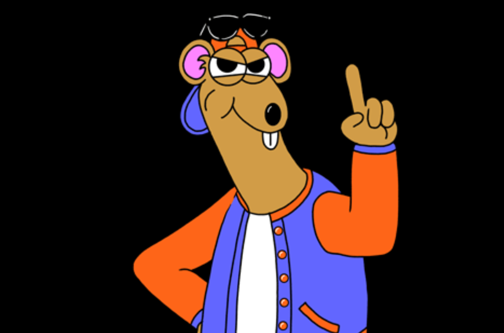
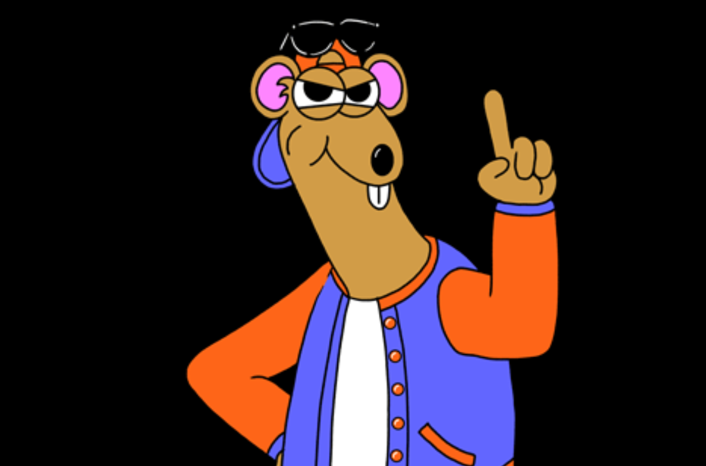

Leonardo Weissman
2019.05.20
Hi, I'd love if someone could make a gif out of this picture. I want the mouse to wag his finger and his head as if saying no.
| Width | Height |
|---|---|
| 100px | 500px |
Leonardo Weissman
2019.05.20
Hi, I'd love if someone could make a gif out of this picture. I want the mouse to wag his finger and his head as if saying no.
| Width | Height |
|---|---|
| 100px | 500px |
Anna Brown
2019.05.21
I only want the last 4 seconds of this video. Could someone cut it for me?
| Width | Height |
|---|---|
| 600px | 300px |
Arne Borg
2019.05.22
I need a drawing of a running cat wearing jewelry and a satchel bag. Modern cartoon style.